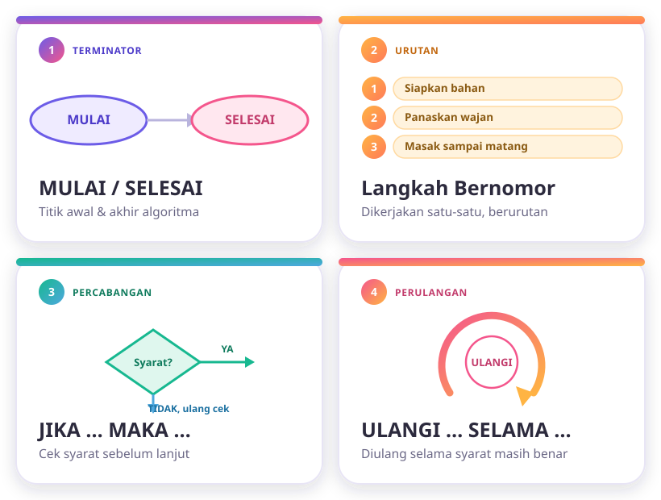
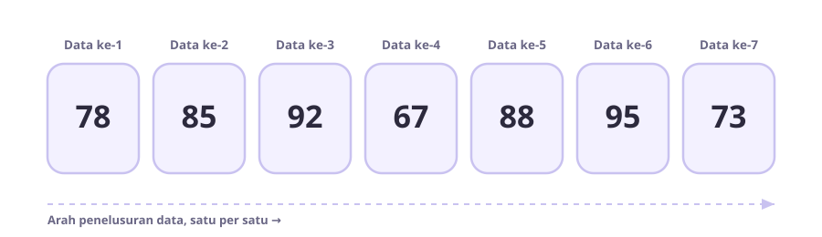
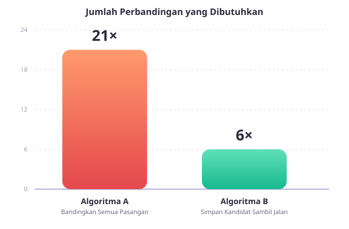
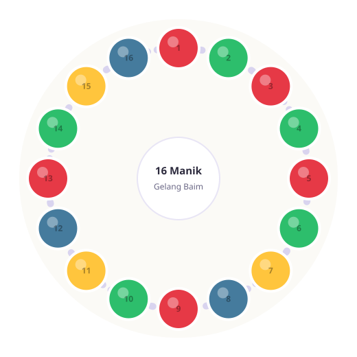
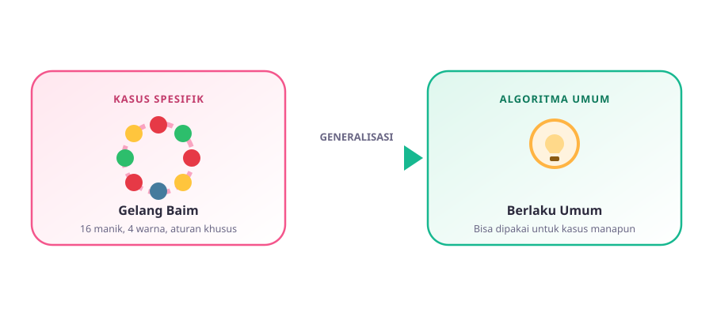

Algoritma Level 2: Sistematis & Bisa Digeneralisasi!
Di pertemuan sebelumnya, kamu udah bantu Kirana mikirin gelang manik-maniknya — dan nemu insight penting: jawaban yang kelihatan gampang ("15 manik!") belum tentu benar kalau belum dicek betul-betul. Sekarang, kita naikin levelnya: belajar menulis algoritma yang lebih rapi, membandingkan algoritma mana yang lebih jempolan, dan mencoba menyusun aturan yang berlaku umum, bukan cuma buat satu kasus doang.
Kasus Kirana: gelang 8 merah, 4 kuning, 3 hijau. Jawaban naif "15 manik" ternyata cuma 14 yang kepakai kalau mau susunannya valid melingkar. Sekarang giliran kita mikir lebih sistematis lagi!
Nulis Algoritma Pakai "Kode Rahasia" Biar Makin Rapi
Supaya algoritma nggak cuma jadi cerita panjang yang bertele-tele, ada beberapa notasi (cara penulisan) yang biasa dipakai. Yuk kenalan sama 4 notasi dasar ini.

MULAI / SELESAI & Langkah Bernomor
MULAI dan SELESAI menandai batas awal dan akhir algoritma — di luar itu, nggak ada proses lagi. Di antaranya, langkah-langkah ditulis bernomor urut (1, 2, 3, ...) supaya jelas mana yang duluan dan mana yang belakangan.
JIKA...MAKA... & ULANGI...SELAMA...
JIKA (syarat) MAKA (aksi) dipakai kalau ada langkah yang cuma dijalankan kalau kondisi tertentu terpenuhi. ULANGI...SELAMA (syarat) dipakai buat mengulang satu atau beberapa langkah terus-menerus, selama syaratnya masih benar.
MULAI 1. Sambungkan kabel charger ke HP 2. Sambungkan charger ke stop kontak 3. ULANGI SELAMA persentase baterai < 100%: a. Tunggu beberapa menit b. Cek persentase baterai 4. JIKA persentase baterai = 100% MAKA cabut charger dari HP SELESAI
Perhatikan, langkah 3 itu perulangan (dia balik lagi ke "tunggu" dan "cek" selama baterainya belum penuh), sedangkan langkah 4 itu percabangan (baru dijalankan kalau syaratnya — baterai 100% — sudah benar).
Sebelum Bilang "Beres!" — Coba Tracing Dulu
Ingat kasus Kirana di pertemuan lalu? Jawaban "15 manik" kelihatannya masuk akal di kepala, tapi begitu ditelusuri satu-satu ketahuan ada yang meleset. Itulah gunanya tracing — menelusuri algoritma langkah demi langkah pakai data nyata, buat mengecek apakah hasilnya benar-benar sesuai yang diharapkan.
Siapkan data contoh
Pilih satu contoh data yang konkret (bukan cuma dibayangkan), lalu catat nilai awalnya.
Jalankan tiap langkah satu-satu
Jangan loncat. Kerjakan algoritmanya persis seperti yang tertulis, langkah demi langkah, sambil dicatat.
Catat perubahan nilainya
Setiap ada nilai yang berubah (misalnya "kandidat tertinggi"), tulis nilainya supaya kelihatan prosesnya.
Bandingkan hasil akhir
Cek, apakah hasil akhirnya memang sesuai tujuan? Kalau enggak, berarti algoritmanya masih perlu diperbaiki.
💡 Kenapa ini penting?
Algoritma yang "kelihatan benar" di kepala kita belum tentu benar kalau dijalankan sungguhan. Tracing itu semacam simulasi manual — dan justru dengan begitu, kesalahan atau kasus aneh (seperti insight "14 dari 15" di pertemuan lalu) bisa ketahuan lebih awal, sebelum algoritmanya benar-benar dipakai.
Cari Nilai Tertinggi & Terendah
Ada 7 nilai ulangan: 78, 85, 92, 67, 88, 95, 73. Gimana caranya nemuin nilai yang paling tinggi tanpa mengurutkan semuanya dulu? Ada algoritma jempolan namanya "Simpan Kandidat Sambil Jalan": anggap dulu data pertama sebagai kandidat tertinggi, lalu telusuri data berikutnya satu per satu — tiap ketemu data yang lebih besar dari kandidat, ganti kandidatnya.

🤔 Gimana Kalau yang Dicari Nilai Terendah?
Coba pikirkan: apakah algoritma "Simpan Kandidat Sambil Jalan" ini bisa dipakai buat cari nilai terendah juga? Kalau iya, bagian mana dari algoritmanya yang perlu diubah? (Hint kecil: ada satu kata yang nentuin arah perbandingannya. Jawaban lengkapnya boleh kamu diskusikan bareng LKPD, ya!)
Battle Algoritma: A vs B
Ternyata, ada lebih dari satu cara buat menyelesaikan soal yang sama. Kita punya dua kandidat algoritma buat cari nilai tertinggi dari 7 data di atas. Siapa yang lebih jempolan?
Bandingkan Semua Pasangan
Setiap data dibandingkan dengan semua data lain, satu per satu, sampai ketemu yang paling besar. Cara ini gampang dipikirkan, tapi jumlah perbandingannya jadi banyak banget — apalagi kalau datanya makin banyak.
Simpan Kandidat Sambil Jalan
Ini algoritma yang barusan kita pakai di studi kasus sebelumnya: cukup simpan satu kandidat, lalu bandingkan kandidat itu dengan data berikutnya, satu per satu sampai data terakhir.

Untuk 7 data, tiap data dibandingkan ke semua data lain — totalnya 21 kali perbandingan yang harus dilakukan.
Cukup 6 kali perbandingan (satu perbandingan untuk setiap data baru yang ditelusuri setelah data pertama).
Keduanya sama-sama efektif — dua-duanya berhasil menemukan 95 sebagai jawaban yang benar. Tapi Algoritma B jauh lebih efisien karena kerjanya lebih hemat, tanpa mengorbankan hasil.
Gelang Baim, Naik Level!
Baim juga mau bikin gelang manik-manik melingkar, tapi levelnya lebih tinggi dari punya Kirana — ada 16 manik, 4 warna, dan berlaku dua aturan sekaligus.

Warna sama nggak boleh bersebelahan. Sama seperti aturan Kirana — dan karena gelangnya melingkar, manik pertama dan terakhir juga dianggap bersebelahan.
Merah dan Kuning juga nggak boleh bersebelahan satu sama lain. Ini aturan tambahan yang bikin levelnya naik — jadi Merah harus "menghindar" dari sesama Merah dan dari Kuning sekaligus!
🤔 Sebelum Coba-Coba, Yuk Hitung Dulu
Jangan buru-buru langsung menyusun manik secara acak. Coba pikirkan dulu: apa hubungan antara jumlah manik dan dua aturan di atas, sebelum kamu benar-benar mulai menyusun?
Level Tertinggi: Bikin Algoritma Umum!
Kita udah menyelesaikan kasus Kirana dan mikirin kasus Baim. Tapi gimana kalau besok ada kasus gelang lain lagi, dengan jumlah manik dan warna yang beda? Masa kita harus mikir dari nol tiap kali?

Inilah yang disebut generalisasi (kadang juga disebut abstraksi): proses mengambil "pola inti" dari satu kasus spesifik, lalu menuliskannya jadi aturan atau algoritma yang berlaku umum — bisa dipakai lagi buat kasus lain yang mirip, tanpa harus mikir dari nol.
Kumpulkan pola dari kasus spesifik
Dari kasus Kirana & Baim, kita lihat pola: "hitung jumlah tiap warna dulu, bandingkan dengan aturan pelarangannya, baru simpulkan mungkin/enggak."
Ganti angka spesifik jadi variabel
Alih-alih "8 merah, 4 kuning, 3 hijau", kita tulis jadi "jumlah warna ke-1, jumlah warna ke-2, dst" — supaya bisa dipakai untuk jumlah berapa pun.
Uji algoritma umum ke kasus baru
Coba pakai algoritma umum itu ke kasus gelang yang berbeda — kalau tetap berhasil, berarti algoritmanya sudah benar-benar general, bukan cuma "kebetulan cocok" di satu kasus saja.
Kuis Level 2: Algoritma
Skor: 0/5Soal-soal ini sedikit lebih menantang dari pertemuan sebelumnya. Klik salah satu jawaban, nanti langsung kelihatan benar atau salahnya beserta penjelasan singkat.